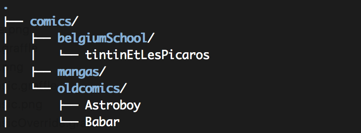
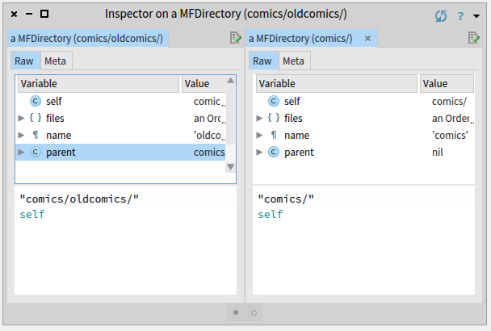

8 Revisiting objects and classes
In the previous chapter, we presented objects and classes via simple examples. In this chapter, we introduce a little bit more elaborated example: a little file system where we revisit everything and extend it to explain late binding, distribution of responsibilities and delegation. The file example will be extended to present inheritance in Chapter 13.
8.1 A simple and naive file system
We start to present a simple example that we use to present and explain the concepts: a simple and naive file system as shown in Figure 8.1. What the diagram shows is that we have:
- files that also have a name and some contents. Here we get three different files
Babar,Astroboy, andtintinEtLesPicaros. - directories that have a name and can contain other files or directories. Here we get the
manga,comics,oldcomics, andbelgiumSchooldirectories. Directories can be nested:comicscontains three repositories. ThebelgiumSchooldirectory containstintinEtLesPicaros.

8.2 Studying a first scenario
Since what we want to develop may be a bit unclear for us, let us define first an example. In the rest of this book, we will code such examples as tests that can automatically be executed. For now, it would make the discourse too complex, so we just use little code examples.
We create two directories.
| dComics dOldComics dManga |
dComics := MFDirectory new name: 'comics'.
dOldComics := MFDirectory new name: 'oldcomics'.We add the oldcomics folder to comics and we check that the parent-child relationship is well set.
...
dComics addElement: dOldComics.
dOldComics parent == dComics
>>> trueHere we verify that the parent of dOldComics is dComics: the message == checks that the receiver is the same object than the argument.
You can also inspect the receiver as follows and if you click on the instance variable parent of the receiver you should obtain the situation depicted by Figure 8.2.
...
dOldComics inspectdOldComics and clicking on the parent variable.
We continue with some queries.
...
dComics parent
>>> nilHere we verify that dOldComics is comprised of the children of dComics.
...
dComics children includes: dOldComics.
>>> trueWe create a new repository and we check that once added to a parent repository, it is included in the children.
dManga := MFDirectory new name: 'manga'.
dComics addElement: dManga.
dComics children includes: dManga
>>> trueDirectory class and some instances (directories).
8.3 Defining a class
Let us start by defining the directory class.
Object << #MFDirectory
slots: { #parent . #name . #files };
package: 'MyFS'When we create a directory, its files is an empty ordered collection. This is what we express in the following method initialize.
MFDirectory >> initialize
files := OrderedCollection newA newly created object is sent the message initialize just after its creation. Therefore the initialize method is executed.
Now we can write the method addElement:.
(To keep things simple, note that we consider that when a file is added to a directory, it does not belong to another directory. This behavior could be implemented by aFile moveTo: aDirectory)
Adding a file to a directory means: (1) that the parent of the file is changed to be the directory to which it is added, (2) that the added file is added to the list of files contained in the directory.
MFDirectory >> addElement: aFile
aFile parent: self.
files add: aFileNote that the method name addElement: is not nice but we chose it on purpose so that you do not believe that delegating requires that the methods have the same name.
An object can delegate its part of duties to another object by simply passing a message.
We should then define the methods name:, parent:, parent, and children to be able to run our example.
MFDirectory >> name: aString
name := aStringMFDirectory >> parent: aFile
parent := aFileMFDirectory >> parent
^ parentMFDirectory >> children
^ filesWith such method definitions, our little example should run. It should not print the same results because we have not changed the printing of the objects yet.
A first little analysis
When we look at the implementation of the method to add a file to a directory we see that the class MFDirectory used another class OrderedCollection to store the information about the files it contains.
An ordered collection is a quite complex object: it can insert, remove elements, grow its size, and many more operations.
We say that the class MFDirectory delegates a part of its duties (to keep the information of the files it contains) to the class OrderedCollection.
In addition, when an object is executed, the object to which it may delegate part of its computation may change dynamically.
Such behavior is not specific to object-oriented programming, in procedural languages we can call another function defined on a data structure. Now with object-oriented programming, there is a really important point: an object will send messages to other objects (even from the same class) and such message send will use the message offered by the receiver. There is normally no way for an object to access the internal structure of another object.
8.4 Printing a directory
Now we would like to get the directory printed in a better way.
Without too much explanation, you should know that the method printOn: aStream of an object is executed when the system or we send the message printString to an object. So we can specialize it.
The argument passed to the method printOn: is a stream.
A stream is an object in which we can store information one after the other in sequence using the message <<.
The argument of << should be a sequence of objects such as a string (which is a sequence of characters).
MFDirectory >> printOn: aStream
aStream << nameLet us try.
| el1 el2 |
el1 := MFDirectory new name: 'comics'.
el2 := MFDirectory new name: 'oldcomics'.
el1 addElement: el2.
el1 printString
>>> 'comics'...
el2 printString
>>> 'oldcomics'What would be nice is to get the full path so that we can immediately understand the configuration. For example, we would like to finish with a '/' to indicate that this is a directory as with the ls command on unix.
| el1 el2 |
el1 := MFDirectory new name: 'comics'.
el2 := MFDirectory new name: 'oldcomics'.
el1 addElement: el2.
el1 >> printString.
>>>'comics'...
el2 printString
>>> 'comics/oldcomics/'A possible definition is the following one:
MFDirectory >> printOn: aStream
parent isNil
ifFalse: [ parent printOn: aStream ].
aStream << name.
aStream << '/'Try it and it should print the expected results. What do we see with this definition: it is a kind of recursive definition. The name of a directory is in fact the concatenation (here we just add in the stream but this is the same. ) of the name of its parents (as shown in Figure 8.4).
Similar to a recursive function navigating a structure composed of similar elements (like a linked list or any structure defined by induction), each parent receives and executes another time the printOn: method and returns the name for its part.
8.5 Adding files
Now we want to add files. Once we will have defined files, we will be able to have a graph of objects of different kinds representing our file system with directories and files, as shown in Figure 8.5.
An example first
Again let us start with an example. A file should contain some contents.
| el1 dOldComics |
el1 := MFFile new name: 'astroboy'; contents: 'The story of a boy turned into a robot that saved the world'.
dOldComics := MFDirectory new name: 'oldcomics'.
dOldComics addElement: el1.
el1 printString.
>>>
'oldcomics/astroboy'A new class definition
Again a file needs a name, a parent, and in addition contents.
We define the class MFFile as follows and illustrated in Figure 8.6.
Note that this solution is not satisfactory and we will propose a much better one later.
Object << #MFFile
slots: { #parent . #name . #contents };
package: 'MyFS'As for the directories we initialize the contents of a file with a default value.
MFFile >> initialize
contents := ''We should define the same methods for parent:, parent, and name:. This duplication coupled with the fact that we get nearly the same class definition should be a clear warning. It means that we do not reuse enough and that if we want to change the system we will have to change it multiple times and we may introduce errors by forgetting one place.
We will address it in Chapter 13. In addition, we will add a method to be able to set the contents of the file contents:.
MFFile >> name: aString
name := aStringMFFile >> parent: aFile
parent := aFileMFFile >> parent
^ parentMFFile >> contents: aString
contents := aStringAt this stage we should be able to define a file and adding it to a directory.
Now we should redefine the implementation of printOn: to print nicely the name of file:
MFFile >> printOn: aStream
aStream << nameBut this is not enough because we will just get 'astroboy' and not 'oldcomics/astroboy'.
So let us improve it.
MFFile >> printOn: aStream
parent isNil ifFalse: [
parent printOn: aStream ].
aStream << name8.6 One message and multiple methods
Before continuing let us step back and analyze the situation. We send the same messages and we execute different methods.
| el1 dOldComics dComics |
el1 := MFFile new name: 'astroboy'; contents: 'The story of a boy turned into a robot that saved the world'.
dOldComics := MFDirectory new name: 'oldcomics'.
dComics := MFDirectory new name: 'comics'.
dComics addElement: dOldComics.
dOldComics addElement: el1.
el1 printString.
>>>
'comics/oldcomics/astroboy'dOldComics printString.
>>>
'comics/oldcomics/'What we see is that there is one message and several implementations of methods and that sending a message will find and execute the correct method. For example, there are two methods printOn: one for file and one for directory but only one message printOn: sent from the printString message.
In addition, a method can be defined in terms of messages sent to other objects. The method printOn: for directories is complex and it delegates the same message to other objects, its parents (as illustrated by Figure 8.7). The method addElement: delegates to the OrderedCollection sending a different message add:.
8.7 Objects: stepping back
Now that we have seen some examples of objects, it is time to step back. Objects are defined by the values of their state, their behavior (shared with the other instances of their class), and their identity.
- State. Each object has specific values. While all the instances of classes have the same structure, each instance has its own values. Each object has a private state. Clients or users of an object cannot access the state of the object if this one does not explicitly expose it by defining a method returning it (such as the message
count). - Behavior. Each object shares the same behavior with all the instances of its class.
- Identity. An object has an identity. It is unique.
oldcomicsis clearly not the same ascomics.
8.8 Examples of distribution of responsibilities
We will now implement two functionalities: the size of directories and a search based on the contents of the files. This will set the context to explain the key concept of the distribution of responsibilities.
File size
Let us imagine that we want to compute the size of a directory. Note that the size computation we propose is fantasist but this is for the sake of the example. To perform such a computation we should also define what is the size of a file. Again let us start with examples (that you will turn into tests in the future.).
First, we define the file size as the size of its name plus the size of its contents.
| el |
el := MFFile new name: 'babar'; contents: 'Babar et Celeste'.
el size = 'babar' size + 'Babar et Celeste' size.
>>> trueSecond, we define the directory size as its name size plus the size of its files and we add an arbitrary number: 2.
| p2 el |
el := MFFile new name: 'babar'.
p2 := MFDirectory new name: 'oldcomics'.
p2 addElement: el.
p2 size = 'oldcomics' size + 'babar' size + 2
>>> trueWe define two methods size one for each class (see Figure 8.8).
MFFile >> size
^ contents size + name sizeMFDirectory >> size
| sum |
sum := 0.
files do: [ :each | sum := sum + each size ].
sum := sum + name size.
sum := sum + 2.
^ sumSearch
Let us imagine that we want to search the files matching a given string. Here is an example to set the stage.
| p el1 el2 |
p := MFDirectory new name: 'comics'.
el1 := MFFile new name: 'babar'; contents: 'Babar et Celeste'.
p addElement: el1.
el2 := MFFile new name: 'astroboy'; contents: 'super cool robot'.
p addElement: el2.
(p search: 'Ba') includes: el1
>>> trueTo implement this behavior is quite simple: we define two methods one in each class (as shown in Figure 8.8).
MFFile >> search: aString
^ '*', aString, '*' match: contentsMFDirectory >> search: aString
^ files select: [ :eachFile | eachFile search: aString ]8.9 Important points
These two examples show several important points:
Modular thinking
Each method is modular in the sense that it only focuses on the behavior of the objects specified by the class defining the method. Such a method can be built by sending other messages without having to know how such methods are defined. It also means that we can add a new kind of class or remove one without having to change the entire system.
Sending a message is making a choice
We send one message and one method amongst the multiple methods with the same name will be selected and executed. The method is dynamically looked up during execution as we will see in Chapters 13 and 12. Sending a message is selecting the corresponding method having the same name as the message. When a message is sent to an object the corresponding method is looked in the class of the message receiver.
Sending a message is making a choice. The system selects for us the correct method to be executed.
Polymorphic objects
We created objects (files and directories) that are polymorphic in the sense that they offer a common set of messages (search:, printOn:, size, parent:). This is really powerful because we can compose objects (for example add a new directory or a file) without changing the program.
Imagine that if we add a new kind of directory we can introduce it and reuse extending programs based on size or search: without changing them.
Creating polymorphic objects is a really powerful capability. It lets us extend and change programs without breaking them.
Most of the time it is better to give similar names to methods performing similar behavior, and different names when the methods are doing semantically different actions so that users of the objects are not confused.
The polymorphism is really a strength of object-oriented languages because it allows one to treat different objects, i.e., instances of different classes, uniformly as soon as they implement the same messages. Polymorphism works in synergy with the idea that an object is responsible to decide how to react to message reception. Indeed, the fact that different objects can implement the same messages lets us write code that only tells the objects to execute some actions without worrying exactly about the kind of objects.
8.10 Distribution of responsibilities
This example as well as the printing of files and directories illustrates something fundamental in object-oriented programming: the distribution of responsibilities. With the distribution of responsibilities, each kind of object is responsible for a specific behavior, and a more elaborated behavior is composed out of such different behavior. The size of a directory is computed based on the size of its files by requesting the files to compute their size.
Procedural
Let us take some time to compare with procedural thinking. Computing the size of a list of files and directories would have been expressed as a monolithic behavior sketch below:
sizeOfFiles: files
| sum |
sum := 0.
files do: [ :aFile |
aFile class = MFFile
ifTrue: [ sum := sum + aFile name size + aFile contents size ].
aFile class = MFDirectory
ifTrue: [
| fileSum |
fileSum := 0.
each files do: [:anInsideFile | fileSum := fileSum + anInsideFile name size + anInsideFile contents size ].
sum := sum + fileSum + each name size + 2].
^ sum While this example is a bit exaggerated, we see several points:
- First, we explicitly check the kind of structures we are manipulating. If this is a file or directory we do something different.
- Second, the logic of the computation is defined inside the
sizeOfFiles:itself, and not in the entities themselves. This means in particular that such logic cannot be reused. - A part of the implementation logic is exposed and not in control of the object. It means that if we decide to change the internal structure of our classes, we will have to change this function too.
- Adding a new kind of such as a root directory is not modular. We will have to modify the method
sizeOfFiles:function.
What you should also see when you compare the two versions is that in the procedural version, we have to check the kind of object we manipulate. In the object-oriented version, we simply tell the object to perform its own computation and return the result to us.
Don't ask, tell. Object-oriented programming essence is about sending orders not checking state.
8.11 So far so good? Not fully!
We have a system with two classes and it offers some behavior composed out of well-defined local behavior (see Figure 8.8). We can have objects composed out of other objects and messages flow within the graph. Object-oriented programming could stop here. Now, it is annoying to have to duplicate the structure and some methods between files and directories, and this is what we will see when we will look at inheritance in Chapter 13. Inheritance is a mechanism to specialize incrementally classes from other classes.
8.12 Conclusion
- A class describes the state (instance variables) and the behavior (methods) of all its instances. The state of an instance is the value of its instance variables and it is specific to one single object while the behavior is shared by all the instances of a class.
- Different objects, instances of different classes, can react differently to the same messages.
- When sending a message, the associated method is found and executed.